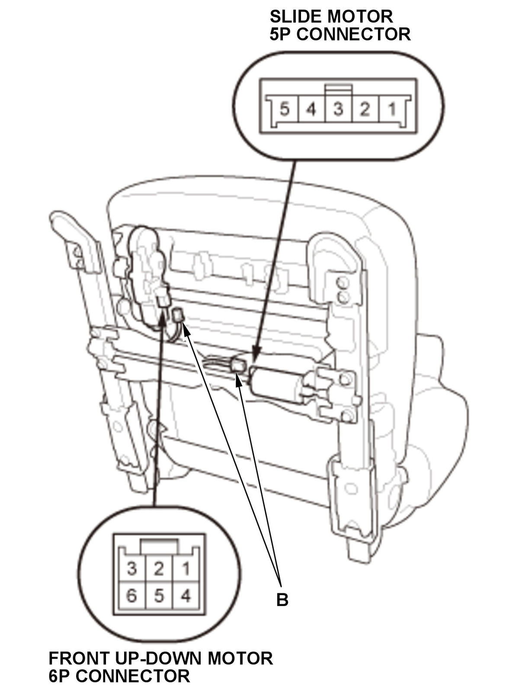
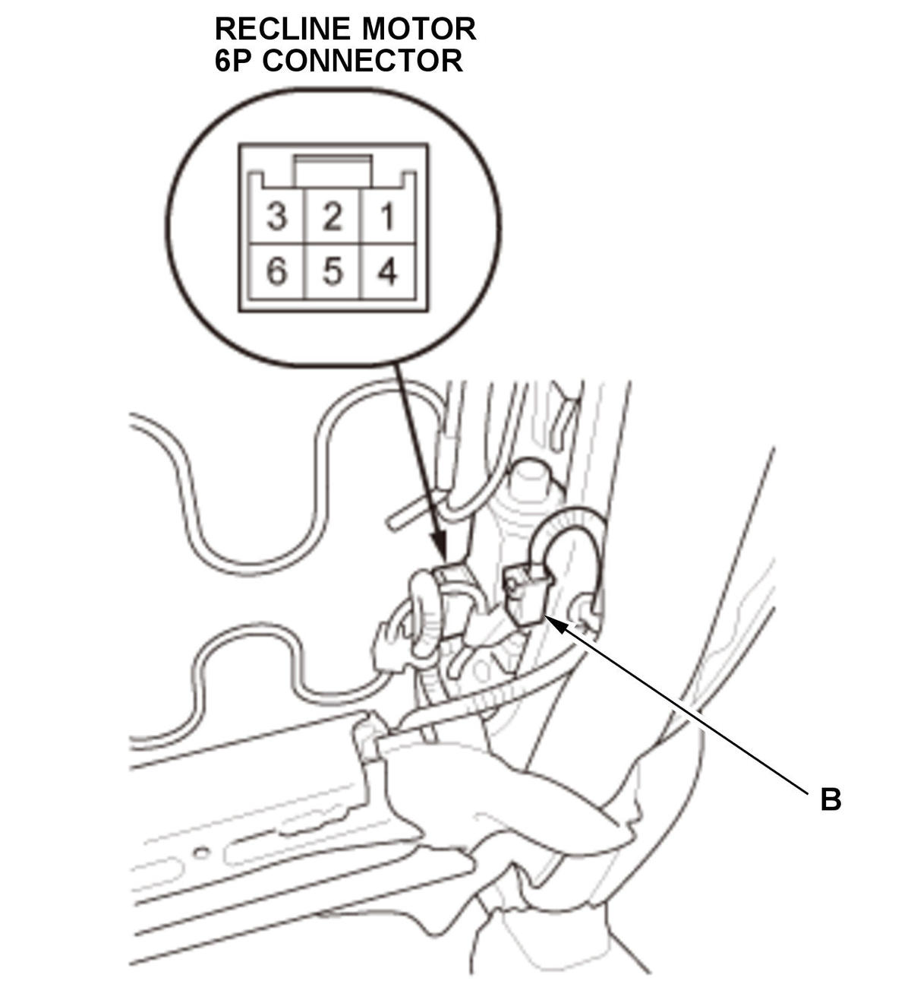
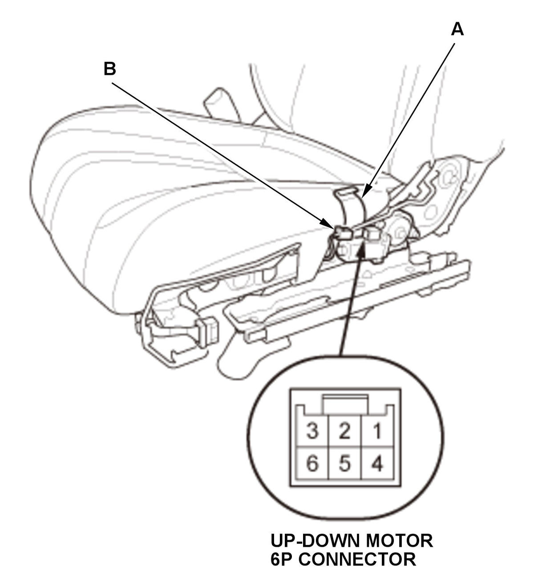

Driver's Power Seat Motor Test: Test
SRS components are located in this area. Review the SRS component locations and the precautions and procedures before doing repairs or service.
- Driver's Seat Recline Cover - Remove
NOTE: If removing the driver's seat recline cover, you do not need to remove the driver's seat.
- Power Seat Motor - Test
1. Test the motor by applying power and ground at the driver's power seat adjustment switch connector on the seat harness according to the table. When the motor stops running, disconnect 12 volt battery power immediately. 2. If the motor does not run or fails to run smoothly, remove the driver's seat
, go to step 3.



Courtesy of HONDA, U.S.A., INC.HONDA, U.S.A., INC.HONDA, U.S.A., INC.3. Remove the driver's seat-back cover/pad as needed 4. Remove the driver's seat cushion cover/pad (A) as needed.
5. Disconnect the connector(s) (B).
6. Test each motor in each direction by connecting power and ground according to the table. When the motor stops running, disconnect 12 volt battery power immediately. 7. If the motor does not run or fails to run smoothly, replace:
NOTE: All motors are part of the seat frame.
- Front up-down motor/seat frame
- Up-down motor/seat frame
- Recline motor/seat frame
- Slide motor/seat frame
If motors run smoothly, replace the driver's seat wire harness.
- All Removed Parts - Install
1. Install the parts in the reverse order of removal.